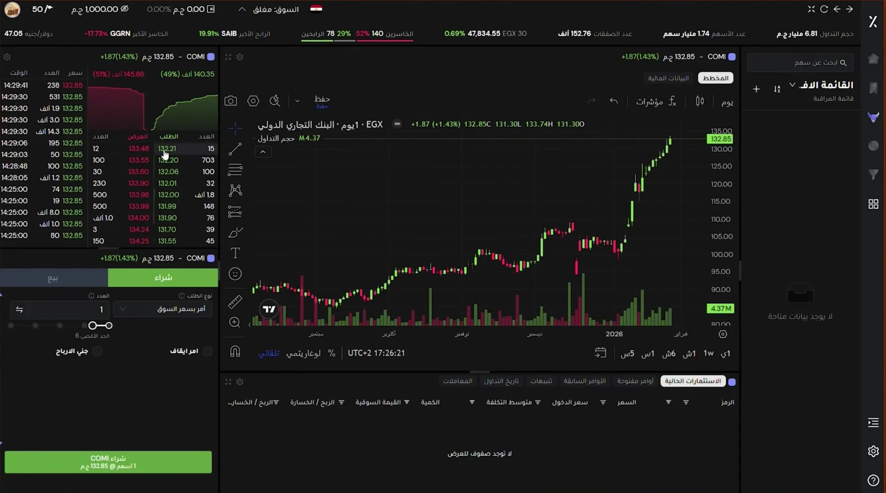
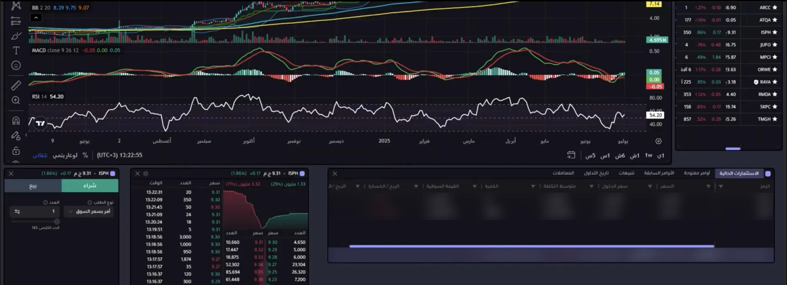
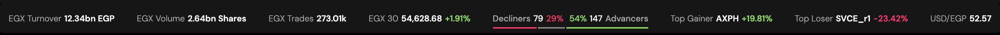
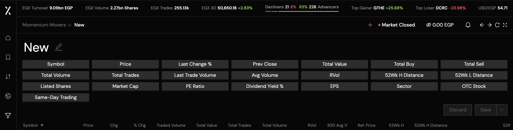

Thndr made investing simple by showing less. ThndrX had to show experts more.
ThndrX is Thndr’s professional-grade trading platform for deeper market analysis, advanced trading and trade management. The brief ran against everything Thndr was known for: give active traders the full picture without slowing a single order down.
Built for a first trade
- Hide anything a beginner doesn’t need yet
- One stock, one decision, one big button
- Mobile first, one screen at a time
Built for the thousandth trade
- Chart, order book, ticket and positions on one screen
- Plan entry and exit in the same order
- Desktop first, multi-panel, same account everywhere

One system, three platforms, one ticket
Web, iOS and Android, designed as one product.
Tokens to components, built while features kept shipping.
Entry, Take Profit and Stop Loss placed as one order, with one confirmation.
On Thndr, the platform ThndrX is part of.
“It’s still in beta, but sadly it’s a very, very bad experience. The chart isn’t organised or practical at all… Please improve this design and make a decent UI.”
هو لسه beta بس للاسف تجربه سيئه جدا جدا جدااا … ياريت تفورو التصميم دا و تعملو UI محترم
“The new ThndrX update is world-class. Really clean work, especially the Market Watch feature.”
التحديث الجديد بتاع ThndrX عالمى · بجد شغل نضيف خصوصا ميزة راصد السوق
“The update is beautiful. Small things next: let us drag watchlists to reorder them, and pop any widget out onto a second screen.”
الابديت جميل دي تفاصيل زي ال watchlists لو نقدر نحركهم عادي بالماوس علشان نرتبهم · وان أنا ممكن افصل ال display بتاعت اي widget واحطها علي شاشه تانيه
Public posts in Thndr’s Facebook community group and ThndrX’s Discord server, translated from Egyptian Arabic. Names left out.
Product designer on ThndrX
I reported to the PM and worked with one PM and about three engineers, plus a group of expert traders we leaned on for feedback.
- The design system, from tokens to components, across web and mobile
- The order pad redesign, including refining the Take Profit / Stop Loss flow after its first release
- The workspace: the snapping widget layout, market depth, trade management, watchlists
- Navigation, the live market strip and the colour system, in Arabic and English
- Turned trader feedback logged in Linear into a prioritised queue, with our expert traders
- Started with the order pad, the highest-impact flow, and prototyped it in Figma Make so the PM and traders could test it before development
- Made the case for building the system alongside features, not after
- Debated inline vs. separate-step brackets
- Reviewed each build against the design before it shipped
- Brought the web platform up to parity with mobile, then shipped three to four big features
- Followed how traders reacted after each release and fed it back into the queue
A real product that outgrew its beta
ThndrX had been built by engineers moving fast: no Figma file, no design system, no designer. It worked, but unevenly. I audited every screen on web and mobile, and four problems stood out.
The widget layout was broken
Panels floated freely, overlapped and couldn’t be reset or aligned, on a platform built around watching several views at once.
Navigation had no point of view
A generic top bar with text tabs that could have belonged to any product, and buried the views traders used most.
No visual language
A pale, desaturated palette with little depth or contrast, and a dark mode that wasn’t built for reading financial data.
Web lagged behind mobile
Features on the app were missing on the web, so traders moving between the two hit dead ends.
“The floating widgets were an absolute catastrophe. They would overlap each other and you could never reset them or even get them aligned properly.”
“The widgets idea is excellent, even better than other international trading platforms. But they need a lock, so they don’t move by mistake.”
فكرة thndrX view widgets ممتازة وتطبيقها جميل وافضل حتي من other international trading platforms بس لازم اضافة خاصية lock
Exits belong inside the order ticket
Experienced traders decide where they’ll get out before they get in. Bracket orders had just gone out to the first users when I joined, with Take Profit and Stop Loss inside the order pad. My part came after that first release: tweaking how the exits work as the pad was redesigned around them.
Every redesign reopens the same question: keep the exits in the ticket, or move them to a separate step after the buy? We discussed it with the PM and engineering. A separate step would look lighter and keep the ticket short. Inline asks more of the ticket, but it matches how traders actually plan a trade, so it stayed.
Option A · Protect it afterwards
RejectedOption B · Plan it in the ticket
Kept and refinedIt matches how traders think
Entry, target and stop are one plan. Splitting them across two moments asks the trader to hold half the plan in their head.
No unprotected window
With a separate step, the position sits without an exit from the moment it fills until the trader comes back. On a fast EGX session, that gap is where losses happen.
It fits the order model
A bracket on ThndrX is part of the buy order and only activates once the buy fills in full. Option A would have needed brackets that attach to an existing position, which v1 didn’t support.
One review of the whole trade
The confirmation shows price, shares, Thndr fees, third-party fees and total cost once, for the full plan, instead of three partial confirmations.
The order pad was one of the biggest things I shipped on ThndrX
I prototyped it early in Figma Make, as a working pad rather than static screens, so the PM and real traders could use it and give feedback before any of it went into development. Try the recreation below.
Interactive recreation in English with demo numbers: 50,000 EGP buying power, 200 shares held, and illustrative fees, not Thndr’s real rates.
Inline had a cost: more fields in the panel every trader uses. These choices kept it from slowing anyone down.
Collapsed by default. Take Profit and Stop Loss are two checkboxes. Traders who don’t use them lose one line of space, not a section.
Percent shortcuts from entry. Traders think “10% up, 5% down”. Shortcuts fill the trigger price from the entry price, and any value can still be typed.
Trigger price ≠ execution price. Each exit picks Limit or Market, and the copy says plainly that hitting the trigger sends the sell, it doesn’t guarantee the fill price.
Rules explained where they bite. A limit buy with brackets must be All or Nothing, because a partial fill would leave part of the position unprotected. The field locks and says why.
Errors stop the order, not the trader. Going over buying power or available shares shows the problem under the field and disables the button until it’s fixed.
One confirmation, as the rules require. Price, shares, Thndr fees, third-party fees and total cost, reviewed once for the whole plan.
Prototype first. The Figma Make prototype let the PM and actual traders place orders on it before development started. Their feedback shaped the pad while changes were still cheap.
Then every order state. We walked both bracket flows with the PM and engineering against every real order state: pending submission, pending, partially filled, filled, rejected, cancelled, expired and suspended by the exchange. Partial fills settled it. With exits inside the buy, the rule stays simple: they arm when the whole order fills. With a separate step, every partly filled position raised a new question about what to protect, and when.
“If I place an order and a stop loss at the same time, then forget or want to add a take profit later, I can’t, because the shares are already reserved. The fix: OCO orders.”
لو انا عملت order وفى نفس الوقت عملت ليه stop loss order … مش هقدر لان كمية الاسهم اتحجزت · الحل - الافضل في الشائع اوامر OCO
Traders didn’t want to depend on the slider to size an order. They wanted to type the amount directly, in cash or in shares. The pad now takes either, and the other field updates to match.
Rebuilding the colour system, through pushback
The old palette was pale and heavily desaturated. It lacked depth and contrast, so panels blurred into each other and the dark mode wasn’t built for reading charts and dense tables for hours. I rebuilt it from tokens up: a full light and dark palette, split into locked colours no team changes and suggested ones for new work, tuned for contrast where traders read most.
It shipped alongside a flow change, and traders pushed back: it wasn’t the app they knew. I read that as a sign of how closely they use the product, not as proof the change was wrong, and I kept it. It held: months later, traders were teaching each other what the colours on the chart mean.

A palette that scales past one designer
Locked colours keep the product consistent as more teams build on it. Suggested ones leave room for new work without reopening old decisions.
Contrast where traders read most
Charts, the order book and price changes get the contrast budget, so gains, losses and levels read at a glance in long sessions.
Pushback came from the most engaged users
The traders who noticed were the ones who live in the product every day, exactly the people worth keeping.
Plan the rollout with the design
Traders build deep muscle memory. Next time, a change this big ships with a transition plan, not next to a flow change.
“The new colour is nice, but the chart background should be black, like TradingView’s. The colour on the chart strains the eyes and affects the candle colours.”
هو اللون الجديد حلو لكن يفضل الخلفيه بتاعت الرسم البياني تكون اسود مش ملونة زي تريدينج فيو لونها اسود · اللون على الرسم البياني مجهد للعين وبياثر على الوان الشموع
“Colours matter for telling orders and prices apart. Focus on these colours and you’ll understand what they mean faster than checking the price at the bottom of the screen.”
الالوان مهمه فى تميز الاوامر والاسعار … ركز فى الالوان دى هتعرف معناها اسهل ماتروح تبص على السعر والرقم فى الشاشه من تحت
Every element on the Trade page had to pass one test
Does a trader need this to decide in the next ten seconds? If yes, it’s always on screen. If they need it every session but not every second, it’s one tap away. If they set it once or rarely, it’s a default or lives in a later step.
The same Trade page in English. The layout mirrors, so the order ticket and book move to the left edge and the rail to the right.
Needed to decide in the next ten seconds.
- 1Buying power and market statusCan I trade right now, and with how much?
- 2Market pulseEGX 30, advancers vs. decliners, top movers
- 3Chart with live priceThe center of the screen, always
- 4Order book and depthWhere the bids and asks actually are
- 5Order ticketBuy or sell, type, size, one button
Needed every session, not every second.
- 6Take Profit and Stop LossA checkbox opens the fields
- 7Positions, open orders, historyTabs under the chart
- 8WatchlistsSide panel, switch lists in place
- 9Home, Trade, Markets, ScreenersNavigation on the edge
- 10FinancialsTab beside the chart
Set once, rarely changed, or only needed at review.
- ·Time in forceA default you change when needed; bracket exits always use GTC
- ·Execution typeSet to AON automatically when brackets need it
- ·Fee breakdownThndr and third-party fees, on the confirmation
- ·Chart settings and saved layoutsBehind the gear and layout menus
- ·Order editsDrag the line on the chart, confirm
“Guys, the thndrX update is so annoying. Why is everything crammed together? I can’t see anything.”
ياجماعه التحديث بتاع thndrX مستفز اوي .. ليه كل حاجه محشورة مع بعضها كدا ، انا مش شايف حاجه
Density needs an escape hatch
Fixed pages kept every trader’s screen predictable, but power users lost the freedom to resize and rearrange. Custom workspaces are that escape hatch: fixed pages for everyone, a free canvas for those who want one.
A workspace that bends to the trader
From a borrowed top bar to side navigation
A structural change, not a visual one. Moving navigation to the side freed the full width for the trading view, put navigation where the eye rests in long sessions, and made room for a live market strip across the top. I reordered views by how often traders used them, and worked with a graphic designer on one custom icon set.

The constraints you can’t design away
The exchange decides what an order can be
EGX order types, five time-in-force options (Day, GTC, FOK, IOC, Date), All-or-Nothing execution and eight order states, each with its own rules for edit and cancel. Regulation also required the price to be shown and an explicit confirmation before every order, so one-tap trading was off the table. Defaults cut the decisions per order, and the confirmation reads at a glance.
A screen that never sits still
The order book, ticks and chart update continuously. Layouts had to hold steady while numbers changed, and every panel needed a clear state for market closed, a suspended stock and stale data.
One account, three platforms, two directions
Web lagged behind mobile when I joined, so parity came first. After that, web, iOS and Android had to describe the same order the same way, in Arabic right to left and in English.
Measure first, then close the gaps traders hit
Ranked by what I’d want to know or fix first, with how I’d tell whether it worked.
Add more widgets. Until usage data shows which panels traders keep open, a new panel only makes the ten-second test harder to pass.
Prioritise the screener earlier. Screeners are one of the most critical screens in the trading experience: they’re where a trader finds what to trade before any chart or order. I put the order pad and workspace first, and the screener builder stayed a grid of identical field buttons. Traders noticed: “Screeners are good overall, but we need to be able to remove any field we don’t need” (8 Sep 2025), and “I subscribed today and the screeners look like this!!”

Write decisions down as they happen. The reasoning behind hard calls lived in my head and in Slack threads. I now treat decision records as part of shipping. Make the system argument earlier. The time spent on foundations paid back on every feature after it.